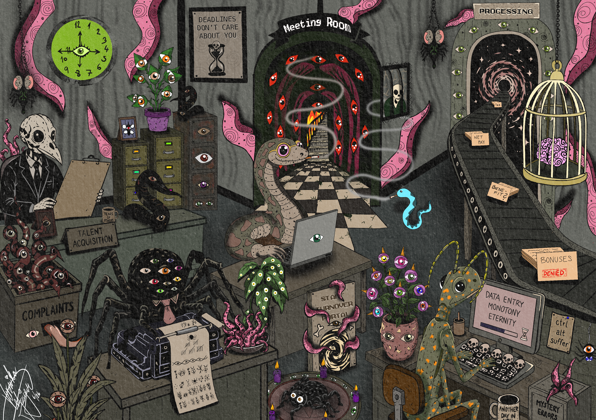
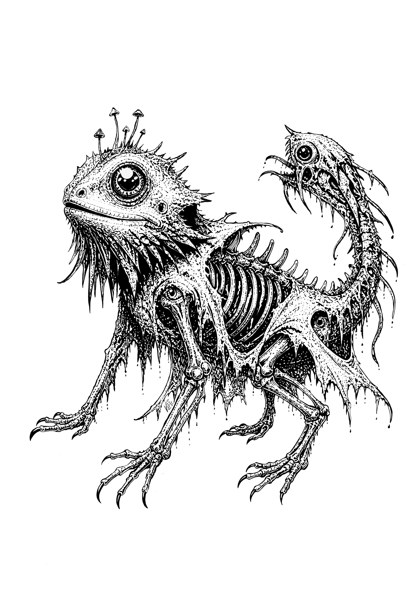
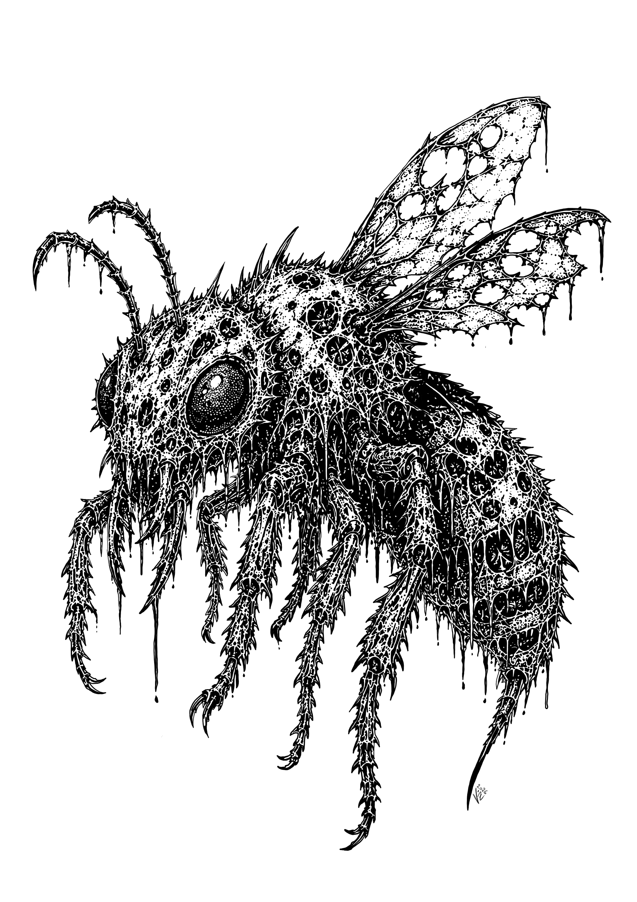
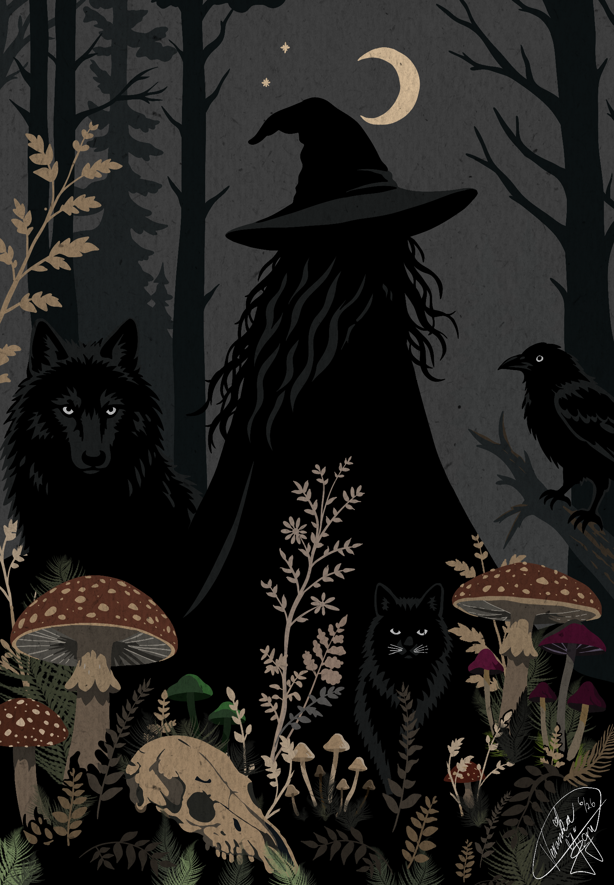
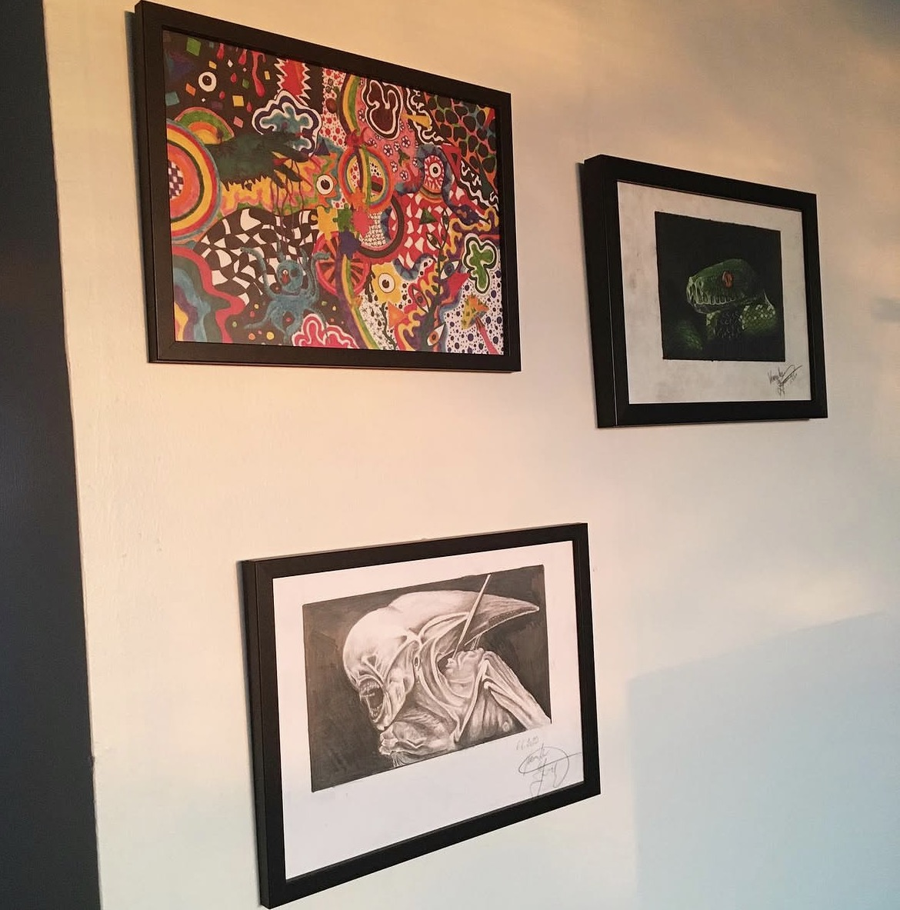
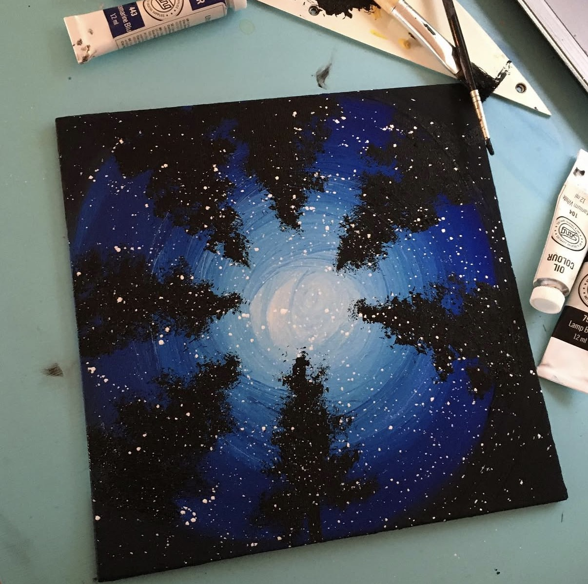
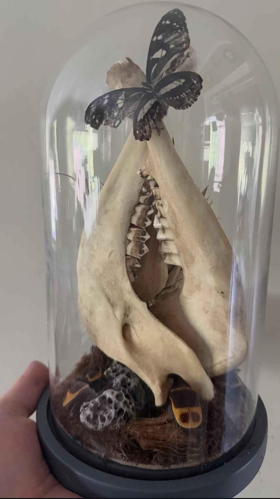
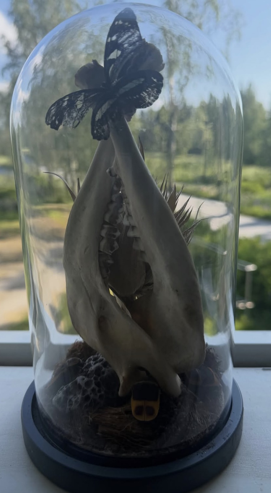
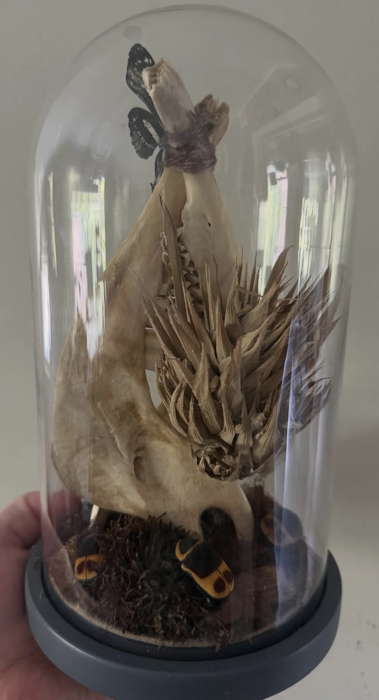

The Practice
Art has always been one of my favourite ways to experiment and express myself. I work with different materials and techniques depending on what I feel like making, whether that means sculpting something from clay, painting on canvas, sketching with pencils and ink, or creating digital illustrations in Procreate on my iPad.
My work often draws inspiration from horror, folklore, anatomy, nature and gothic imagery. I particularly enjoy unusual textures, organic shapes, strange creatures and darker themes, although a fair amount of absurd humour tends to find its way into my creations too.
I rarely stick to one artistic style. Sometimes I want to spend hours working on tiny details, and other times I just want to make something weird because the idea amuses me.
Sculptures & Handmade Objects

I enjoy working with clay because it allows me to turn an idea into something physical. I experiment with shapes, textures and different finishes, often taking inspiration from marine life, anatomy and other organic forms.
One of my projects is an octopus-inspired sculptural lamp, with curling tentacles and a textured, metallic-looking surface. I particularly enjoyed shaping the tentacles and experimenting with the surface details to give the piece an aged, almost otherworldly appearance.
Sculpting is often a process of trial and error for me. I like figuring things out as I go, learning new techniques and occasionally discovering that the material has entirely different plans from mine.
Digital Art & Strange Creatures
My digital illustrations tend to fall somewhere between gothic fantasy, horror and whatever strange idea happens to appear in my head.
I use Procreate to experiment with different styles, from detailed black-and-white creature designs to colourful, surreal compositions and darker, atmospheric illustrations.
Fever Dreams & Surreal Worlds


Some of my illustrations are best described as fever dreams. They are crowded, slightly absurd scenes filled with strange creatures, unexpected details and things that probably shouldn't exist together.
One example is my imaginary office of horrors, where eyeballs grow from plants, tentacles emerge from filing cabinets, and monstrous employees carry on with their miserable corporate existence. It's a mixture of workplace satire, surreal humour and the sort of nonsense that makes perfect sense in a dream.
I enjoy creating these scenes because there are no particular rules to follow. I can take an ordinary setting, introduce increasingly ridiculous elements and see how far the idea goes.
Creatures That Shouldn't Exist




Another recurring interest is designing strange, slightly grotesque creatures. My black-and-white illustrations combine elements of animals, insects, skeletons and imaginary anatomy into creatures that look as though they belong in a particularly questionable natural history book.
I enjoy working with intricate linework, textures and exaggerated anatomical details. Exposed bones, oversized eyes, spines, claws and unusual proportions often find their way into these designs.
Despite their somewhat horrifying appearances, I tend to find these creatures rather endearing. Apparently, my definition of cute is quite flexible.
Witchcraft, Folklore & Gothic Atmospheres


Not everything I draw is quite so chaotic. I also enjoy creating quieter, atmospheric illustrations inspired by witchcraft, folklore and the natural world.
My witch illustration brings together a shadowy forest, a crescent moon, ravens, a wolf, a black cat, mushrooms and animal bones. Rather than relying on elaborate details, the composition uses silhouettes, muted colours and layered natural elements to create a sense of mystery.
I particularly enjoy the visual language of gothic and folkloric art, where familiar elements of nature can feel beautiful, unsettling and a little magical at the same time.
Traditional Drawing & Painting




Alongside digital illustration, I enjoy drawing and painting traditionally. I work with pencils, ink and paints, experimenting with different techniques and subjects.
Traditional art offers a different experience from working digitally. I enjoy the physical process of building up a drawing, mixing colours and working directly with materials, including the occasional happy accident that cannot simply be undone.
Oddities & Collections






My appreciation for unusual things extends beyond making art. I also collect and occasionally create curiosities, including objects inspired by natural history, bones, skulls and other things that might look more at home in a Victorian cabinet of curiosities.
I find these objects fascinating for their shapes, structures and the stories behind them. What some people might consider morbid, I tend to see as an interesting part of nature, anatomy and history.
My collection also provides inspiration for drawings, sculptures and other creative experiments.
Creativity Beyond Research
Although my research and creative hobbies are quite different, they share something I enjoy: curiosity, experimentation and figuring out how things work.
Art gives me the freedom to explore ideas without worrying about whether they serve a practical purpose. Sometimes I simply want to create something because I find it interesting, strange or visually appealing.